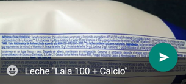

Introduce la contraseña para acceder*
*La contraseña se te otorgará por medio de WhatsApp.
Instrucciones
Para iniciar el programa nutricional integral
¡Gracias por confiar en mí! Tu proceso comienza aquí. Asegúrate de completar los siguientes pasos para que podamos crear un plan que se adapte a tus necesidades:
Acude al laboratorio de tu preferencia para solicitar alguna de las dos opciones que se te presentan a continuación:
-
Opción básica (mínima necesaria):
- Biometría hemática completa.
- Química sanguínea de 6 elementos.
¿Para qué nos sirven?
- Evaluar riesgo cardiovascular general.
- Conocer función renal y metabólica básica.
Recomendado para:
- Pacientes sin antecedentes familiares de enfermedades relevantes.
- Quienes desean una evaluación inicial simple.
-
Opción recomendada (evaluación más completa):
- Biometría hemática completa.
- Química sanguínea ampliada con:
- Glucosa.
- Hemoglobina glucosilada (HbA1c).
- Insulina en ayunas.
- Perfil lipídico completo (colesterol total, HDL, LDL directo, triglicéridos).
- Ácido úrico.
- Enzimas hepáticas (AST y ALT).
- Proteína C Reactiva (PCR).
- Ionograma de 3 parámetros (sodio, potasio, cloro).
¿Para qué nos servirán?
- Identificar resistencia a la insulina.
- Evaluar con mayor precisión el riesgo cardiovascular.
- Conocer el estado del hígado, riñones y equilibrio de electrolitos.
Recomendado para:
- Pacientes con obesidad, prediabetes o antecedentes familiares de enfermedades crónicas.
- Deportistas o personas físicamente activas.
- Quienes buscan un enfoque preventivo integral.
Si ya cuentas con estudios recientes (máximo 2 meses), podemos usarlos, siempre que incluyan los indicadores necesarios.
Envíame tus resultados apenas los tengas. Si necesitas sugerencias de laboratorios, con gusto puedo ayudarte.
- Retírate la mayor cantidad de ropa posible y quítate los accesorios.
- Anota las condiciones en las que tomarás las medidas (fecha, hora, si estás en ayuno, si ya hiciste del baño, etc.). Ejemplo: "20 de junio 2025. Estoy en ayuno, ya hice del baño, me tomé un vaso de agua, son las 7 am, me medirá mi pareja."
Pasos para las mediciones:
1. Peso:
- Coloca la báscula en un lugar nivelado y de superficie regular.
- Sube a la báscula sin zapatos ni accesorios.
- Párate con los pies separados a la altura de las caderas, brazos a los costados y vista al frente.
- Toma la lectura del peso y anótalo.
2. Estatura:
- Usa la medición de tu última visita médica. Si no la tienes, acude a una farmacia para obtener este dato.
- Asegúrate de medirte sin calzado ni peinados altos.
3. Circunferencia de cintura:
- Coloca dos dedos arriba del ombligo y marca este punto con una cruz pequeña.
- Rodea tu cintura pasando la cinta métrica por este punto, asegurándote de que quede paralela al piso y no se voltee.
- Inhala profundamente, exhala y toma la lectura en el punto donde la cinta cruza su inicio.

4. Circunferencia de brazo:
- Flexiona tu brazo no dominante a 90° con la palma hacia arriba.
- Marca el punto medio entre el codo y el hombro.
- Extiende el brazo y rodea la cinta métrica por el punto marcado.
- Toma la lectura donde la cinta cruza su inicio.
5. Circunferencia de cadera:
- De pie, identifica el punto de mayor relieve de tus glúteos.
- Rodea la cinta métrica por esta área, asegurándote de que quede paralela al piso.
- Toma la lectura en el punto donde la cinta cruza su inicio.

6. Circunferencia de muñeca:
- Ubica los huesitos que sobresalen de tu muñeca.
- Rodea la cinta métrica justo por encima de ellos.
- Toma la lectura en el punto donde la cinta cruza su inicio.

7. Circunferencia de cuello:
- Identifica la manzana de Adán y asegúrate de mantener la cabeza erguida mirando al frente.
- Rodea la cinta métrica justo debajo de la manzana de Adán.
- Toma la lectura en el punto donde la cinta cruza su inicio.

- Es importante que las mediciones sean lo más precisas posible para obtener un análisis adecuado.
- Si tienes dudas al realizar alguna medición, contáctame para orientación.
Por favor, ingresa al formulario para completar tu Historia Clínico-Nutricia.
Para brindarte una asesoría personalizada y adecuada, necesito conocer todos los alimentos industrializados que consumes normalmente. Sigue las instrucciones a continuación para proporcionarme la información de manera precisa.
- Identifica los alimentos
industrializados:
- Ubica todos los alimentos industrializados que consumes regularmente. Estos son productos que vienen en empaque, como latas, botellas, frascos o cajas.
- Asegúrate de incluir tanto alimentos como bebidas.
- Fotografía la Información Nutrimental:
- Busca la sección de Información Nutrimental en el empaque, generalmente marcada con la leyenda "Información Nutrimental".
- Toma una foto legible, asegurándote de que la información esté enfocada y completa.
- Fotografía los Ingredientes:
- Busca la sección de Ingredientes en el empaque, generalmente marcada con la leyenda "Ingredientes".
- Toma una foto clara y enfocada de esta sección.
- Si los Ingredientes y la Información Nutrimental caben en una sola foto sin perder legibilidad, puedes tomarlas juntas.
- Envía tus fotos
Una vez que hayas tomado todas las fotos necesarias, es momento de enviármelas. Asegúrate de que las imágenes sean nítidas y que la información sea legible. Puedes enviarme las fotos de dos maneras diferentes. Aquí te explico cómo hacerlo:
-
Opción A: Crear un álbum en Google Fotos y compartirlo.
- Crea un álbum en Google Fotos con todas las fotos de los productos. ¿No sabes cómo hacerlo? Consulta esta guía aquí.
- Agrega una descripción a cada foto con el nombre y la marca del producto. ¿Necesitas ayuda para hacerlo? Revisa cómo se agregan descripciones aquí.
- Crea el enlace del álbum y compártemelo por WhatsApp. ¿No sabes cómo generar el enlace? Encuentra un tutorial aquí.
-
Opción B: Enviar las fotos directamente por WhatsApp.
- Escribe el nombre y marca del producto en cada foto antes de enviarla.
- Envía las fotos.
 -


◆ Nota Importante: No borres las fotos hasta que tengamos nuestra videollamada, ya que podrían ser necesarias para la revisión.
Recomendaciones Finales: Revisa que las fotos sean nítidas y completas antes de enviarlas. Si tienes dudas durante el proceso, contáctame para orientarte.
Si tienes alguna pregunta o necesitas ayuda, no dudes en contactarme.
Una vez que hayas completado todos los pasos anteriores, me pondré en contacto contigo en un plazo de 48 horas para aclarar cualquier aspecto y agendar nuestra primera videollamada.
Recuerda: Una vez que recibas estas instrucciones, tendrás un plazo máximo de 15 días para completar todos los pasos indicados. Si no se cumplen dentro de este tiempo, será necesario realizar un nuevo pago para reactivar tu acceso al programa. Esto garantiza que la información que envíes sea reciente y adecuada para tu evaluación.